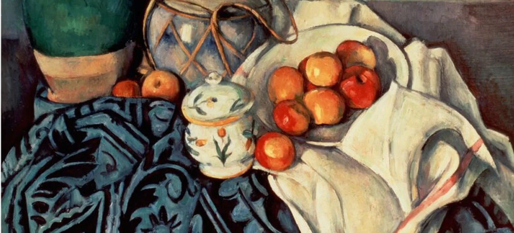

Paul Cézanne, Still Life with Apples, 1893 to 1894. J. Paul Getty Museum, Los Angeles
Between 2018 and 2023 the price of apples in forty towns rose by about a fifth. The dataset has one row per town per year: the price in pence per kilogram, that year's rainfall, the town's median income, and the share of its apples that are imported. In 2021 a spring frost destroyed much of the crop in the eastern orchards, which supply the twenty eastern towns. Work down the page in Stata: each station gives the commands for a do-file and the output Stata should return, so you can check your screen against the page. The regression stations move from an association to a cause.
Nothing here is stored. Answers stay in your browser.
Save the file somewhere you can find. In Stata, File, Import, Text data (delimited), choose the file and accept the defaults. Stata writes the equivalent command in the Results window. Copy that line into a new do-file so the import can be repeated.
* Week 6. Apple prices. Change the path to where you saved the file.
clear all
import delimited "apples.csv", clear
describe
list in 1/8Two variables are strings, marked str. Stata can count them but not average them.
One row per town per year. Town01 appears six times, 2018 to 2023.
Variable names are for typing; labels are for reading. Rename the three with units in their names, label every variable, and turn the town string into a numeric code so Stata can use towns as groups.
rename price_p price rename rain_mm rain rename income_k income label variable price "Apple price, pence per kg" label variable rain "Annual rainfall, mm" label variable income "Median household income, £000" label variable import_share "Share of apples imported" encode town, generate(town_id) describe price rain income town_id
Make the two indicator variables the story needs, summarise everything, then look at the mean price by year.
generate east = region == "East" generate post = year >= 2021 summarize price rain income import_share east post tabulate region tabstat price, by(year) statistics(mean sd n)
scatter price rain
bysort east year: egen mprice = mean(price)
twoway (connected mprice year if east == 1, sort) ///
(connected mprice year if east == 0, sort), ///
xline(2020.5) legend(order(1 "East" 2 "Other towns"))Type help regress and read the Quick start. Then fit price on rainfall, income and the import share with robust standard errors. This is the regression a dissertation reports. Click any number in the output to see what it is.
help regress regress price rain income import_share, robust
The frost is the host's rule. In 2021 it hit the eastern orchards, and nothing about the towns' price trends decided where the frost fell. That gives a treated group, a control group, a before and an after. First the naive comparison, then the difference in differences.
* The first pick: eastern against other towns, after the frost only regress price east if post == 1, robust * Difference in differences, errors clustered by town regress price i.east##i.post, vce(cluster town_id)
The frost did the work on this page: a shock that chose the treated towns for reasons unconnected with their prices. The next page shows five ways researchers find such a shock, or make one, in the studies the lecture uses: a lottery in Rajasthan, a state line in the Marcellus shale, a referendum in California, a colonial boundary in Peru, and a draft lottery.
Go to the five designs